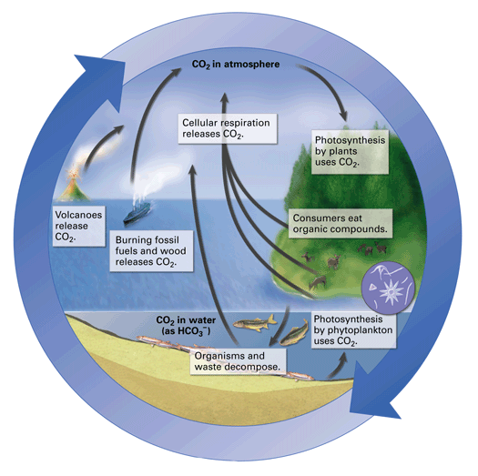

Objectives
- Summarize the basic pattern of chemical cycling.
- Describe how carbon and oxygen are cycled through an ecosystem.
- Describe the movement of nitrogen through an ecosystem.
- Describe the processes that make up the water cycle.
Key Terms
Did you know that some of the carbon atoms in an apple in your lunch might once have been in a panda's lungs? Carbon dioxide molecules exhaled by a panda in China could have been carried to North America by global air currents. During photosynthesis, some of the carbon atoms could have been incorporated into sugar by an apple tree, and then finally reached your lunch tray. It's possible for some of life's important chemicals to travel the globe as they cycle through and between ecosystems.
The Basic Pattern of Chemical Cycling
Many chemicals cycle within an ecosystem. This section explores some of the most important cycles: the carbon and oxygen cycle, the nitrogen cycle, and the water cycle. Chemical cycles typically involve three general steps:
- Producers incorporate chemicals from the nonliving environment into organic compounds.
- Consumers feed on the producers, incorporating some of the chemicals into their own bodies and releasing some back to the environment in waste products.
- As organisms die, decomposers break them down, further supplying the soil, water, and air with chemicals in inorganic form. The producers gain a renewed supply of raw materials for building organic matter, and the cycles continue.
In addition, at least part of each chemical's cycle involves nonliving processes such as rain and fires. As you read about the cycles, look for the three basic steps, as well as for nonliving processes that move chemicals around and between ecosystems.
The Carbon and Oxygen Cycle
Since many of the movements of carbon in an ecosystem are closely linked to those of oxygen, their paths are sometimes described together as the carbon and oxygen cycle. In the atmosphere, carbon is found in inorganic form as carbon dioxide gas (CO2). Significant amounts of inorganic carbon are also found in water in dissolved form as HCO3–. Producers use the carbon and oxygen atoms of these inorganic compounds to form organic compounds during photosynthesis (Figure 36-10). Some of this organic carbon cycles to consumers as food.
|  |
Figure 36-10
Many life processes and human activities contribute to the cycling of carbon in the biosphere. |
During cellular respiration, both producers and consumers break down organic compounds such as sugars and release carbon dioxide gas as a waste product. Carbon dioxide also is released to the atmosphere as decomposers break down detritus.
Nonliving processes also play a role in the carbon cycle. Burning fossil fuels—oil, coal, and natural gas—releases carbon dioxide to the atmosphere. (Fossil fuels form over hundreds of millions of years from the remains of living things.) Burning wood, both from natural forest fires and from human activities, also releases carbon dioxide gas. Geologic events such as volcanic eruptions add more carbon dioxide gas to the atmosphere.
The Nitrogen Cycle
Nitrogen is found in all living organisms as an element in amino acids and other essential molecules. But although almost 80 percent of Earth's atmosphere is nitrogen gas (N2), most producers can only use nitrogen in the form of compounds such as ammonium (NH4–) and nitrate (NO3–). Certain types of bacteria convert the nitrogen gas to ammonia (NH3) through a process called nitrogen fixation (Figure 36-11). These nitrogen-fixing bacteria live in the soil and in nodules on the roots of plants such as peas, beans, alfalfa, and clover. In the soil the ammonia picks up another hydrogen ion from water, forming ammonium. Other bacteria in the soil can convert ammonium to nitrates in a process called nitrification. Producers absorb the ammonium and nitrates from the soil and use them to build amino acids, proteins, and nucleic acids. Consumers that eat the producers thereby obtain their nitrogen in the form of organic molecules. Eventually, decomposers release the nitrogen (as ammonium) from the wastes and decaying bodies of organisms, and the cycle continues. Denitrifying bacteria in the soil convert some nitrates back to nitrogen gas and release it into the atmosphere.
 |
Figure 36-11
From the atmosphere, nitrogen is converted by bacteria to forms that plants and animals can use to build amino acids, proteins, and nucleic acids. |
The Water Cycle
Nonliving processes play an especially large role in the water cycle. The sun's energy evaporates water from land and water surfaces, adding gaseous water vapor to the atmosphere (Figure 36-12). As it cools, water vapor condenses and eventually falls as precipitation (rain, snow, hail, or sleet). Plants absorb this fresh water from the soil, and consumers obtain water by eating and drinking.
 |
Figure 36-12
The three major processes of evaporation (including transpiration), condensation, and precipitation continuously move water between the land, bodies of water, and the atmosphere. |
A large amount of water exits plants during transpiration, evaporation from the plant's leaves. On a hot summer day 200 liters of water could reenter the atmosphere from just one average-sized maple tree.
Water that is not retained by plants or bound to soil particles either runs off into rivers and streams or restores groundwater. Eventually, this water may reenter the atmosphere through evaporation, and the cycle continues.
Concept Check 36.3
1. Identify three basic steps of chemical cycling.
2. Explain how photosynthesis and respiration are involved in cycling carbon and oxygen.
3. Describe three roles that bacteria play in the nitrogen cycle.
4. Follow a raindrop through one possible path through the water cycle, ending as water vapor in the atmosphere.